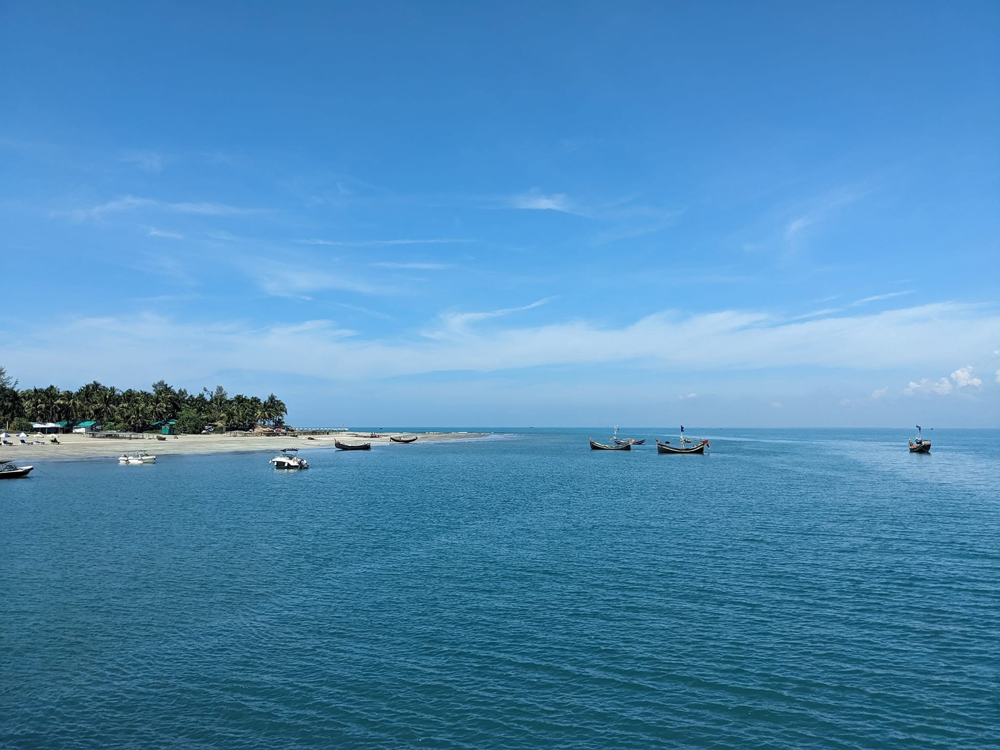
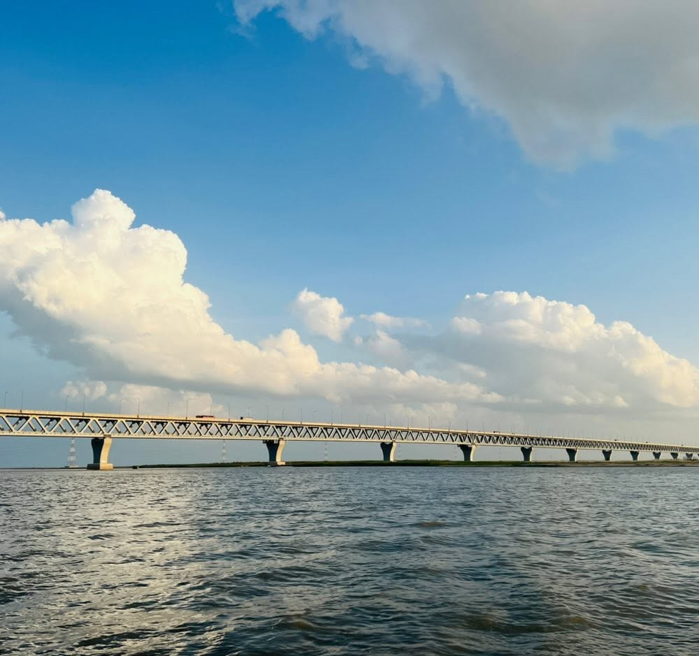

Tropical paradise & coral reefs


Tropical paradise & coral reefs

Modern megacity & urban life
.jpeg "Jovedar shiv mondir.")
Ancient Architecture & Rich Heritage

World longest sea beach.

Best for hiking and adventure.

Discover Bangali meseum.